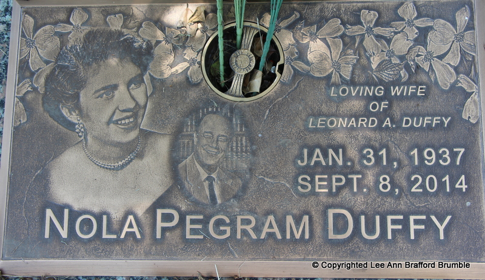

About contacting this siteYou have followed an e-mail link on the Pegram Family Album. That address no longer reaches anyone, and this page explains why. The album was published between 1999 and 2010. Its front page was last updated on 14 June 2010, and nothing on it has changed since. Every e-mail address on these pages dates from that period or earlier. Most of them were retired long ago, along with the services that hosted them. The two people who ran the site have both died. Winona Ott Solomon (6 December 1944 – 4 May 2011) researched the Pegram lines of North Carolina and Virginia, and the site called her "probably the foremost authority on the descendants of Edward Pegram of Dinwiddie Co., Virginia." Nola Pegram Duffy (31 January 1937 – 8 September 2014) built the album and maintained it as its webmaster for more than a decade. Pegram was her own surname; this was her family.  Nola's marker at Alamance Memorial Park, Burlington, North Carolina, which carries her portrait and that of her husband, Leonard A. Duffy. She spent more than a decade publishing other people's family photographs and put none of herself on the site; this is the only known photograph of her. Two photographs of Leonard are in the archive, at images/duffy.jpeg and images/duffy2.jpeg, linked from no page of the original site. Photograph by Lee Ann Brafford Brumble, 7 May 2016, from Find a Grave memorial #162260902 and used with her permission. Many other cousins contributed the research collected here. Their addresses appear on these pages as they did when the site was live. Whether any particular one still works, and whether the person behind it is still living, is not something this archive knows. If you need to reach someone nowThis site is preserved as an archive. It is not maintained, and no new research is being added to it. If you hold rights in something published here, if you contributed research and want your attribution corrected, or if you appear on these pages and would rather not, you can raise it at the archive's issue tracker: github.com/pegram-family/pegram-family.github.io/issues The archive's statement on rights and provenance records what is known about where this material came from. |
{kind=link}
{kind=link}